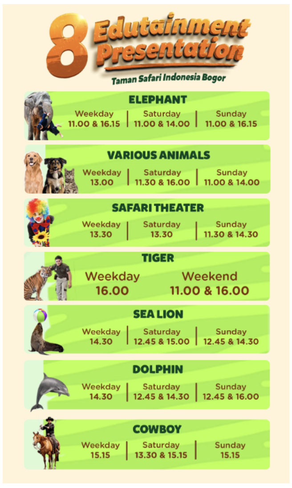

SEO Ideation · Description Writing · Event Schema
Education Page
Optimization.
Taman Safari Bogor · Education Page
I proposed the improvements, wrote show descriptions, and prepared Event schema.
My Role
Ideation · Description Writing · Schema Preparation
Page Updated · 15 April 2026
See the Search Results ↓
The OpportunityShow Descriptions
& Event Schema
& Event Schema
01 / What the Numbers Show
Search Performance.
Before: 29 Oct 2025–14 Apr 2026
After: 16 Apr–30 Sep 2026
Google Search Console · This Page
The Daily Search Trend
Sep 2025–Sep 2026 · 7-Day Rolling Average
Source: Google Search Console · Update day excluded from the comparison.
02 / See What Changed
See What Changed.
The original schedule image alongside the updated page, with written show descriptions.
Before · Original Schedule Visual
Show names and times presented inside an image.
After · Updated Education Page

Written descriptions, individual show sections, and a schedule table. Scroll the image to explore the page.
03 / My Work, Up Close
What I Updated.
My contribution covered the idea, the written descriptions, and the Event schema preparation.
Page Review
The schedule contained useful information, but the page depended on the visual to explain its shows.
Schedule Image↓Opportunity for Written Context
Show Descriptions
I wrote the descriptions to explain the show information in readable page content, alongside the visuals.
Show NameWritten DescriptionSchedule & Location
Event Schema
I prepared the Event schema to describe the page’s shows in a structured format.
EventName · Description · Location